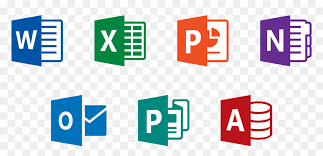

: Divisions for grouping content.
Document Structure
- : Root element.
- : Contains metadata (title, stylesheets).
- : Main content of the page.
Best Practices
- Semantic HTML: Use tags that convey content meaning.
- Proper Nesting: Ensure correct tag hierarchy.
- Valid HTML: Follow standards for compatibility.
- Accessibility: Design for inclusivity.
JavaScript
 Java Script: Coding Part
Java Script: Coding Part
Description:
- Programming language for web development.
- Used to add interactivity and dynamic behavior to web pages.
Key Concepts
- Variables: Store and manipulate data.
- Functions: Reusable blocks of code.
- Conditionals: Execute code based on conditions (if statements).
- Loops: Repeat code execution (for, while loops).
- Arrays: Store collections of data.
- Objects: Store data in key-value pairs.
- DOM Manipulation: Modify HTML and CSS on the fly.
- Events: Respond to user interactions (clicks, keypress).
Asynchronous JavaScript
- Callbacks: Execute functions after a task is completed.
- Promises: Handle asynchronous operations more elegantly.
- Async/Await: Simplify asynchronous code using keywords.
Modern JavaScript
- ES6+ Features: Arrow functions, let and const, classes, destructuring.
- Module System: Organize code into reusable modules.
- Frameworks and Libraries: React, Angular, Vue for building robust web applications.
Adobe Premiere Pro Editing
Pr
 Adobe Premier Pro: Video Editing
Adobe Premier Pro: Video Editing
Description:
- Professional video editing software.
- Used for creating and editing videos with various effects.
Key Concepts
- Timeline: Organize and arrange video clips.
- Editing Tools: Cut, trim, and arrange clips on the timeline.
- Transitions: Add smooth transitions between clips.
- Effects: Apply visual and audio effects to enhance the video.
- Audio Editing: Adjust and enhance audio tracks.
- Exporting: Save the edited video in different formats.
Advanced Techniques
- Color Correction: Adjust colors for a consistent look.
- Keyframing: Animate properties over time.
- Multi-camera Editing: Edit footage from multiple cameras simultaneously.
- Dynamic Link: Seamlessly integrate with other Adobe Creative Cloud applications.
Workflow
- Import Media: Bring video and audio assets into the project.
- Editing: Arrange clips on the timeline and apply edits.
- Export: Save the final video for distribution.
Microsoft Office

Winword+Access+Excel+Publisher+PowerPaint
- Suite of office applications for productivity.
- Includes tools for document creation, data analysis, and presentations.
Key Applications
- Microsoft Word: Document creation and word processing.
- Microsoft Excel: Spreadsheet software for data analysis and calculations.
- Microsoft PowerPoint: Presentation software for creating slideshows.
- Microsoft Outlook: Email client and personal information manager.
- Microsoft Access: Database management system.
Common Features
- Templates: Pre-designed layouts for quick document creation.
- Formatting: Customize fonts, styles, and layouts.
- Formulas: Perform calculations and analysis in Excel.
- Slides: Create visually engaging presentations with PowerPoint.
- Email Management: Organize and manage emails in Outlook.
- Database Queries: Retrieve and analyze data using Access.
Collaboration and Integration
- Cloud Integration: Save and access files using Microsoft 365 cloud services.
- Collaboration: Share and edit documents in real-time with others.
- Integration: Seamlessly work across different Office applications.
Common Features
- Templates: Pre-designed layouts for quick document creation.
- Formatting: Customize fonts, styles, and layouts.
- Formulas: Perform calculations and analysis in Excel.
- Slides: Create visually engaging presentations with PowerPoint.
- Email Management: Organize and manage emails in Outlook.
- Database Queries: Retrieve and analyze data using Access.
Collaboration and Integration
- Cloud Integration: Save and access files using Microsoft 365 cloud services.
- Collaboration: Share and edit documents in real-time with others.
- Integration: Seamlessly work across different Office applications.
Up
- END OF THE PROJECT